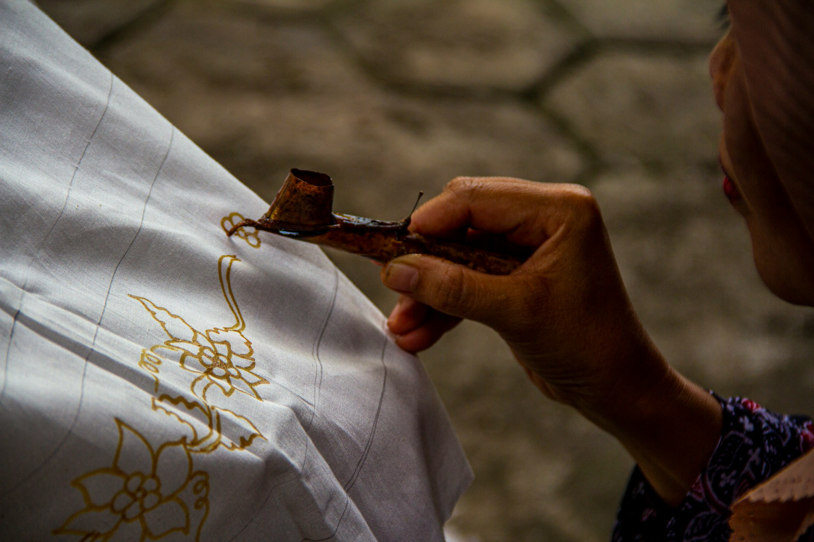

Galeri Foto
Kumpulan foto kegiatan, keindahan alam, dan perkembangan Desa Gringsing
Total: 18 foto | Menampilkan: 18 foto





Dokumentasi kegiatan dan keindahan Desa Gringsing
Kumpulan foto kegiatan, keindahan alam, dan perkembangan Desa Gringsing
Total: 18 foto | Menampilkan: 18 foto